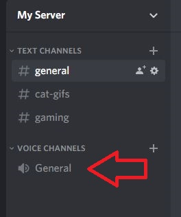

How to Join a Voice Channel
Here you will learn how to join a voice channel.
Voice Channels make hanging out easier - they require no ringing - only to be in the same server with your friends.
- Navigate to the Voice channels.
- Click on the voice channel you want to join. 